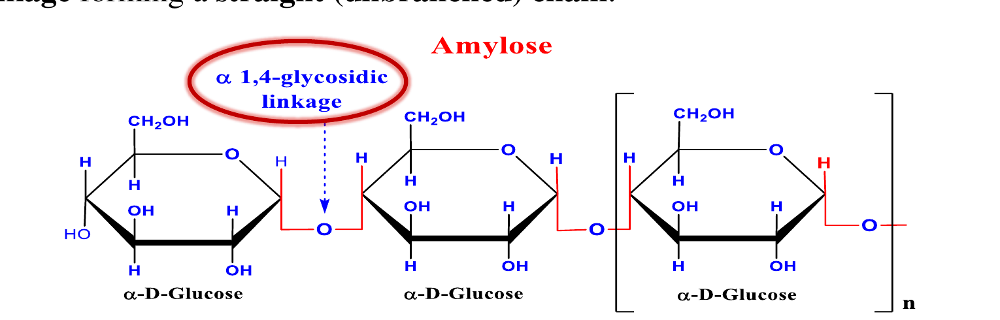
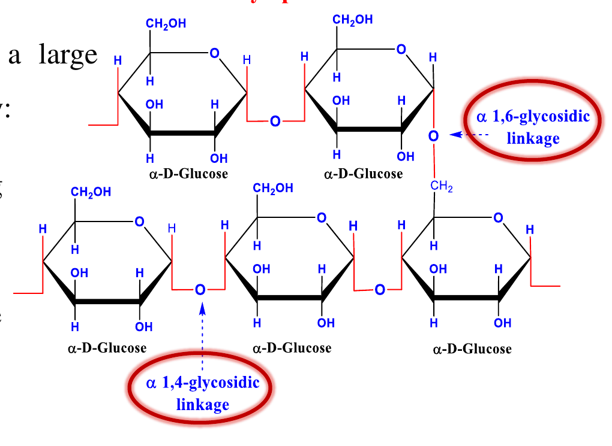
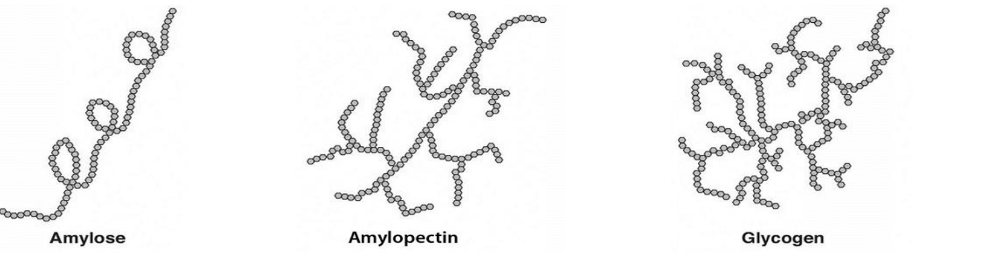
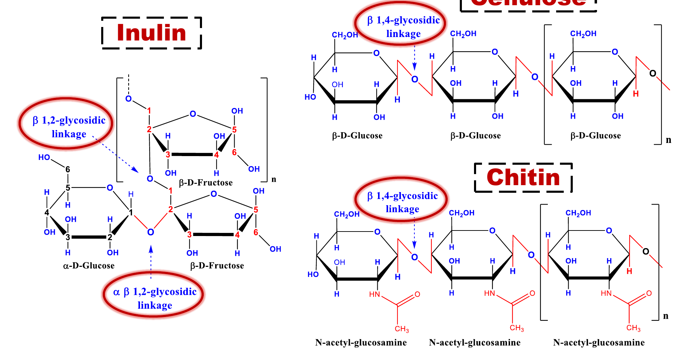
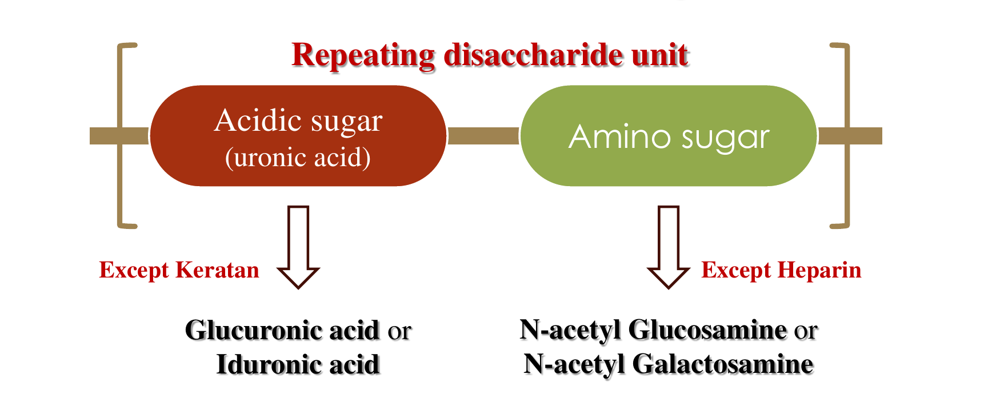
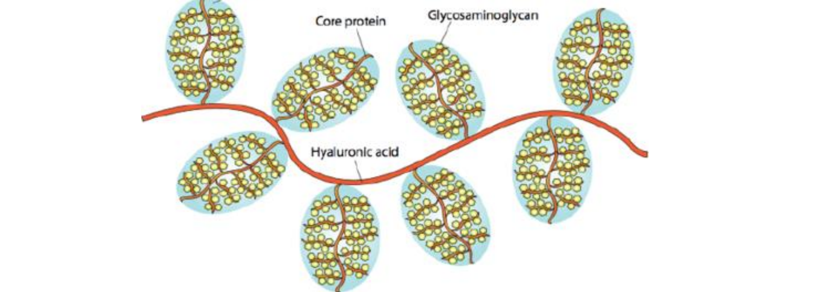

سلايد العنوان: مقرر Biochemistry 1 — المحاضرة الثالثة — الكربوهيدرات (Carbohydrates). إعداد: د. منى حسن زهني، مدرّس الكيمياء الحيوية، كلية الصيدلة، جامعة الدلتا للعلوم والتكنولوجيا.
Biochemistry 1 — Lecture 3 — Carbohydrates. Presented by Dr. Mona H. Zohny, Lecturer of Biochemistry, Faculty of Pharmacy, Delta University for Science and Technology.
💡
المحاضرة دي هي تكملة سلسلة الكربوهيدرات، والجزء ده اسمه Polysaccharides (السكريات العديدة) وهو Section (2) من الكربوهيدرات.
📌 لازم تفتكرها من السلايد دي
اسم المحاضرة، رقمها، والمحور: Carbohydrates → Polysaccharides
اسم المحاضر والجامعة
🧠 اختبر نفسك0 / 5
Q1
What is the main topic of Lecture 3 in Biochemistry 1?
Q2
Who is the lecturer of this Biochemistry 1 lecture?
Q3
The polysaccharides lecture in this course is which section of carbohydrates?
Q4
The lecture belongs to which faculty and university?
OBJECTIVE — By the end of this lecture, the students should be able to know:
• Polysaccharides:
▸ Homopolysaccharides (Homoglycan)
1) Starch 2) Dextrin 3) Glycogen
4) Cellulose 5) Inulin 6) Chitin
▸ Heteropolysaccharides (Heteroglycan)
1) Hyaluronic acid 2) Chondroitin sulfate
3) Dermatan sulfate 4) Keratan sulfate
5) Heparin sulfate 6) Heparan sulfate
💡
اعتبرها خريطة ذهنية للمحاضرة: أول حاجة Polysaccharides بتتقسم لقسمين كبار — Homoglycan (نوع سكر واحد بس) و Heteroglycan (أكتر من نوع). الأول عنده 6 أنواع، والتاني كمان 6. لو حفظت الـ6 والـ6 دول، تكون مسكت المحاضرة كلها من الدقّة الأولى.
📌 لازم تفتكرها من السلايد دي
Polysaccharides بتتقسم لـ Homopolysaccharides (Homoglycan) و Heteropolysaccharides (Heteroglycan)
Polysaccharides are classified into how many main classes?
Q2
Which of the following is NOT a homopolysaccharide (homoglycan)?
Q3
Hyaluronic acid and chondroitin sulfate are examples of:
Q4
Which of the following is a fructan-type homoglycan listed in the objectives?
Q5
How many homopolysaccharides are listed in the objective slide?
Slide 3 / 20
3. Polysaccharides — Definition & Classification
تعريف و تصنيف السكريات العديدة (Polysaccharides):
• السكريات العديدة بتتكوّن من أكتر من 10 وحدات سكر أحادي (monosaccharide units) متوصلة بروابط جليكوسيدية (glycosidic bonds)، وبتتصنّف إلى:
أ) متجانسة السكر (Homopolysaccharides / Homoglycan):
✓ مكوّنة من نوع واحد بس من وحدات السكر الأحادي، زي: النشا (starch)، الدكسترين (dextrin)، الجليكوجين (glycogen)، السليلوز (cellulose)، الكيتين (chitin)، والإنولين (inulin).
ب) غير متجانسة السكر (Heteropolysaccharides / Heteroglycan):
✓ مكوّنة من أكتر من نوع من وحدات السكر الأحادي، زي «الجلوكوز أمينوجليكان» (glycosaminoglycans = GAGs)، واللي بتتسمى كمان «mucopolysaccharides».
Polysaccharides
• Polysaccharides are composed of more than 10 monosaccharide units linked by glycosidic bonds and are classified into:
A. Homopolysaccharides (Homoglycan):
✓ Made up of only one type of monosaccharide units such as starch, dextrin, glycogen, cellulose, chitin and inulin.
B. Heteropolysaccharides (Heteroglycan):
✓ Formed of more than one type of monosaccharide unit such as “glycosaminoglycans” (GAGs), also called “mucopolysaccharides”.
💡
الفرق بسيط جدًا: Homoglycan = نوع سكر واحد (زي بيت مبني كله من نفس الطوبة). Heteroglycan = أكتر من نوع سكر (زي بيت من طوب مختلف الأحجام والألوان).
🧠 خد بالك من الرقم 10: أقل من 10 وحدات = Oligosaccharide، وأكتر من 10 = Polysaccharide.
📌 لازم تفتكرها من السلايد دي
Polysaccharide = أكثر من 10 وحدات سكر أحادي مربوطة بـ glycosidic bonds
Homoglycan = نوع سكر واحد فقط (starch, dextrin, glycogen, cellulose, chitin, inulin)
Heteroglycan = أكثر من نوع سكر (GAGs = mucopolysaccharides)
🧠 اختبر نفسك0 / 5
Q1
Polysaccharides are composed of more than how many monosaccharide units?
Q2
Homopolysaccharides are made up of:
Q3
Glycosaminoglycans (GAGs) are also called:
Q4
Which bond links monosaccharide units in polysaccharides?
The homoglycan section covers how many polysaccharides?
Q2
Homoglycan is also known as:
Q3
Which section comes first in the lecture: Homoglycan or Heteroglycan?
Q4
Starch and Dextrin appear on the divider slide of:
Q5
The divider slide is followed by detailed explanation of:
Slide 5 / 20
5. Homopolysaccharides — Naming System
تسمية السكريات العديدة المتجانسة (Homopolysaccharides):
• بتتسمى حسب طبيعة الوحدة المكوّنة لها:
▸ الجلوكانات (Glucans / Glucosans): مكوّنة من وحدات «D-glucose» وتشمل:
– النشا (Starch) – الدكسترين (Dextrin) – الجليكوجين (Glycogen) – السليلوز (Cellulose)
▸ الفروكتانات (Fructans / Fructosans): مكوّنة من وحدات «D-fructose» وتشمل:
– الإنولين (Inulin) — وموجود في النباتات
✓ الكيتين (Chitin): بيتكوّن من وحدات «acetyl glucosamine».
Homopolysaccharides
• They are given names according to the nature of their building units as following:
▸ Glucans (Glucosans): Formed of “D-glucose” units and include:
– Starch – Dextrin – Glycogen – Cellulose
▸ Fructans (Fructosans): Formed of “D-fructose” units and include:
– Inulin (present in plants)
✓ Chitin: Consists of “acetyl glucosamine” units
💡
قاعدة التسمية سهلة: الوحدة اللي بيتكوّن منها السكر هي اللي بتحدد اسمه.
🧠 فكرة للحفظ: Glucans من Glucose، و Fructans من Fructose — نفس الحرف الأول.
🔥 استثناء مهم: Chitin مش من جلوكوز ولا فركتوز، هو من acetyl glucosamine (لأنه فيه مجموعة أمينو).
📌 لازم تفتكرها من السلايد دي
Glucans (Glucosans) = من D-glucose: Starch, Dextrin, Glycogen, Cellulose
Fructans (Fructosans) = من D-fructose: Inulin (in plants)
Chitin = من acetyl glucosamine units (استثناء)
🧠 اختبر نفسك0 / 5
Q1
Glucans are formed of which building unit?
Q2
Inulin is an example of:
Q3
Which of the following is NOT a glucan?
Q4
Chitin consists of which units?
Q5
Fructans include which compound?
Slide 6 / 20
6. Starch
1) النشا (Starch):
• النشا هو الشكل الرئيسي لتخزين الكربوهيدرات في النباتات اللي فيها كلوروفيل (chlorophyll-containing plants). و**لا يوجد أبدًا في الحيوانات**.
• النشا بيوجد على شكل حبيبات (granules)، والحبيبة بتتكوّن من مكوّنين أساسيين:
أ) الأميلوز (Amylose): بنسبة (15–20%)، ويوجد في الجزء الداخلي (Core) من حبيبة النشا.
– بوليمر خطي (linear) من وحدات الجلوكوز مربوطة برابطة α 1,4 glycosidic linkage.
ب) الأميلوبكتين (Amylopectin): بنسبة (80–85%)، ويوجد في الجزء الخارجي (Shell) من حبيبة النشا.
– بوليمر متفرّع (branched) من وحدات الجلوكوز مربوطة بـ α 1,4 و α 1,6 glycosidic linkage معًا.
1. Starch
• Starch is the chief storage form of carbohydrates in chlorophyll-containing plants. It never exists in animals.
• Starch present in the form of granules contained two main constituents:
a) Amylose: (15–20%) in the inner part (Core) of starch granule.
– Linear polymer of glucose units linked together by α 1,4 glycosidic linkage.
b) Amylopectin: (80–85%) in the outer part (Shell) of starch granule.
– Branched polymer of glucose units linked by both α 1,4 and α 1,6 glycosidic linkage.
💡
تخيّل حبيبة النشا زي كورة: القلب بتاعها (Core) من الأميلوز (15–20% بس، وخطي)، والقشرة الخارجية (Shell) من الأميلوبكتين (80–85%، ومتفرّع).
🧠 للحفظ: Amyl**ose** = **O**ne line (خط مستقيم). Amylopectin = **Pectin** like a tree with branches.
🔥 الرقمين 15–20% و 80–85% بيتسألوا كتير.
📌 لازم تفتكرها من السلايد دي
Starch = الشكل الرئيسي لتخزين الكربوهيدرات في النباتات، ولا يوجد في الحيوانات
Amylose = 15–20%، الجزء الداخلي (Core)، خطي، α 1,4 linkage
Amylopectin = 80–85%، الجزء الخارجي (Shell)، متفرّع، α 1,4 + α 1,6 linkage
🧠 اختبر نفسك0 / 5
Q1
Starch is the chief storage form of carbohydrates in:
Q2
What percentage of the starch granule is amylose?
Q3
Amylose is located in which part of the starch granule?
Q4
Which linkages are found in amylopectin?
Q5
Amylose is a polymer of glucose linked by:
Slide 7 / 20
7. Amylose — Structure (α 1,4)
الأميلوز (Amylose) — التركيب:
• جزيء الأميلوز بيكوّن الجزء الداخلي (Core) من حبيبة النشا.
• الأميلوز مركّب ذو سلسلة مستقيمة (straight chain)، وبياخد شكل حلزوني (helix structure).
• بيتكوّن من عدد كبير من وحدات α-D-glucose مربوطة برابطة α 1,4-glycosidic linkage، مكوّنة سلسلة مستقيمة (unbranched).
Amylose
• The amylose molecule forms the inner part (Core) of starch granule.
• Amylose is a straight chain compound in the form of a helix structure.
• It is composed of a large number of α-D-glucose units linked by α 1,4-glycosidic linkage forming a straight (unbranched) chain.

Amylose: α-D-glucose units linked by α 1,4-glycosidic linkage forming a straight (unbranched) chain.
💡
الأميلوز زي سلّم حلزوني (spiral staircase) — سلسلة واحدة طويلة بيلفّت حوالين نفسها.
🧠 الحلزونية (helix) دي هي السبب في تفاعل النشا مع اليود (iodine) اللي بيدّي اللون الأزرق — لأن اليود بيدخل جوه الحلزون.
The helix structure of amylose is important because it:
Slide 8 / 20
8. Amylopectin — Structure (α 1,4 + α 1,6)
الأميلوبكتين (Amylopectin) — التركيب:
• الأميلوبكتين بيكوّن الغلاف الخارجي (Shell) لحبيبة النشا، وهو **غير قابل للذوبان في الماء** (لأنه جزيء كبير).
• سلسلة متفرّعة (branched chain) بتتكوّن من عدد كبير من وحدات α-D-glucose مربوطة بـ:
✓ رابطة α 1,4-glycosidic linkage → على طول الفرع.
✓ رابطة α 1,6-glycosidic linkage → عند نقطة التفرّع (branching point).
Amylopectin
• Amylopectin forms the outer coat (Shell) of starch granule and is insoluble in water (as large molecule).
• It is a branched chain formed of a large number of α-D-glucose units linked by:
✓ α 1,4-glycosidic linkage → along the branch.
✓ α 1,6-glycosidic linkage → at the branching point.

Amylopectin: branched chain — α 1,4-glycosidic linkage along the branch and α 1,6-glycosidic linkage at the branching point.
💡
الأميلوبكتين زي شجرة: الفروع بتتفرّع من الجذع.
🧠 القاعدة الذهبية: **4 على الفرع، و6 عند التفرّع**. (α 1,4 = along the branch، α 1,6 = at the branch point). دي أكتر نقطة بتتشابه فيها وبتتسأل.
📌 لازم تفتكرها من السلايد دي
Amylopectin = outer shell, branched, insoluble in water (large molecule)
α 1,4 along the branch | α 1,6 at the branching point — قاعدة أساسية
🧠 اختبر نفسك0 / 5
Q1
Amylopectin forms which part of the starch granule?
Q2
Which linkage is found at the branching point of amylopectin?
Q3
Amylopectin is insoluble in water because:
Q4
Along the branch of amylopectin, glucose units are linked by:
Q5
Compared with amylose, amylopectin is:
Slide 9 / 20
9. Dextrin — & Hydrolysis of Starch
2) الدكسترين (Dextrin):
• بيتكوّن من جزيئات α-D-glucose مربوطة بـ α 1,4-glycosidic linkage جوه الفروع، وبـ α 1,6-glycosidic linkage عند نقاط التفرّع.
• بيتكوّن أثناء التحلل الجزئي (partial hydrolysis) للنشا بواسطة أميليز اللعاب (salivary amylase) أو البنكرياس (pancreatic amylase)، والناتج خليط من: أميلودكسترين (amylodextrin)، إريثرودكسترين (erythrodextrin)، وأكرودكسترين (achrodextrin).
تحلل النشا (Hydrolysis of starch):
Starch → Amylodextrin + Maltose → Erythrodextrin + Maltose → Achrodextrin + Maltose → Maltose
2. Dextrin
• Dextrin is composed of α-D-glucose molecules linked by α 1,4-glycosidic linkage within the branches and by α 1,6-glycosidic linkage at the branching points.
• They are produced during the partial hydrolysis of starch by salivary or pancreatic amylase, resulting in a mixture of amylodextrin, erythrodextrin, and achrodextrin.
Hydrolysis of starch:
Starch → Amylodextrin + Maltose → Erythrodextrin + Maltose → Achrodextrin + Maltose → Maltose
تخيل التحلل زي تقطيع شجرة: كل ما الأميليز يقطع، الشجرة بتصغر لحد ما تبقى مالتيوز (Maltose) وهو سكر ثنائي.
🧠 ترتيب الحفظ: **A-E-A** = Amylodextrin → Erythrodextrin → Achrodextrin.
⚠️ خد بالك: Dextrin (دكسترين) ≠ Dextran (دكستران) — فرق حرف واحد وسؤال امتحان شهير!
📌 لازم تفتكرها من السلايد دي
Dextrin = partial hydrolysis of starch by salivary/pancreatic amylase
Dextrin is produced by partial hydrolysis of starch by:
Q2
Which of the following is the correct order in starch hydrolysis?
Q3
The mixture resulting from partial starch hydrolysis includes all EXCEPT:
Q4
Within the branches of dextrin, glucose units are linked by:
Q5
The final product of complete starch hydrolysis shown is:
Slide 10 / 20
10. Dextran
3) الدكستران (Dextran):
• الدكستران سكر عديد متفرّع ومعقّد (complex branched polysaccharide)، بتنتجه بكتيريا معيّنة عن طريق تخمير السكروز (fermentation of sucrose).
• بيتكوّن من جزيئات α-D-glucose مربوطة بـ α 1,6-glycosidic linkage جوه الفروع، وبـ α 1,3-glycosidic linkage عند نقاط التفرّع.
• الدكستران بيختلف عن الدكسترين في تركيبه عالي التفرّع (highly branched structure) وأنواع الروابط الجليكوسيدية المحددة.
• ونظرًا للزوجته العالية (high viscosity)، والضغط الأسموزي المنخفض (low osmotic pressure)، وتفككه البطيء (slow disintegration)، بيُستخدم كموسّع لحجم البلازما (plasma volume expander) في حالات النزيف (hemorrhage).
3. Dextran
• Dextran is a complex branched polysaccharide produced by certain bacteria through the fermentation of sucrose.
• It is composed of α-D-glucose molecules linked by α 1,6-glycosidic linkage within the branches and by α 1,3-glycosidic linkage at the branching points.
• Dextran differs from dextrin in its highly branched structure and the specific types of glycosidic linkages.
• Due to their high viscosity, low osmotic pressure, and slow disintegration, they are used as plasma volume expander in case of hemorrhage.
Dextrin (α 1,4 within branches + α 1,6 at branching) vs Dextran (α 1,6 within branches + α 1,3 at branching point).
💡
🧠 الفرق بين Dextrin و Dextran — ده سؤال امتحان كلاسيكي:
| | Dextrin | Dextran |
|--|--|--|
| المصدر | تحلل النشا الجزئي | تخمير السكروز بالبكتيريا |
| جوه الفرع | α 1,4 | α 1,6 |
| عند التفرّع | α 1,6 | α 1,3 |
| التفرّع | أقل | عالي جدًا |
والفرق حرف واحد بس في الاسم! (dextrin / dextran)
📌 لازم تفتكرها من السلايد دي
Dextran = microbial fermentation of sucrose (by bacteria)
Dextran: α 1,6 within branches + α 1,3 at branching points (عكس الدكسترين)
يُستخدم plasma volume expander في النزيف لزوجته العالية وضغطه الأسموزي المنخفض
🧠 اختبر نفسك0 / 5
Q1
Dextran is produced by certain bacteria through fermentation of:
Q2
Within the branches of dextran, glucose units are linked by:
Q3
At the branching points of dextran, the linkage is:
Q4
Dextran is clinically used as:
Q5
Dextran differs from dextrin mainly in:
Slide 11 / 20
11. Glycogen
4) الجليكوجين (Glycogen):
• الجليكوجين هو الشكل المخزِّن للكربوهيدرات في الحيوانات (وبيتسمى animal starch).
• ويوجد بشكل أساسي في العضلات الهيكلية (skeletal muscles) والكبد (liver).
• سكر عديد **عالي التفرّع** (highly branched polysaccharide) بيتكوّن من جزيئات α-D-glucose متوصلة بـ α 1,4-glycosidic linkage جوه الفروع، وبـ α 1,6-glycosidic linkage عند نقاط التفرّع.
4. Glycogen
• Glycogen is the storage form of carbohydrates in animals (animal starch). It is mainly present in skeletal muscles and liver.
• It is a highly branched polysaccharide composed of α-D-glucose molecules that are connected by α 1,4-glycosidic linkage within the branches and by α 1,6-glycosidic linkage at the branching points.

Structural comparison: Amylose (linear helix) vs Amylopectin (branched) vs Glycogen (highly branched).
💡
الجليكوجين زي «نشا الحيوانات» — نفس الفكرة بس متفرّع أكتر بكتير من الأميلوبكتين، عشان الجسم يقدر يفكّكه بسرعة لما يحتاج طاقة فجأة.
🧠 قارن: Amylose (خط) < Amylopectin (متفرّع) < Glycogen (متفرّع جدًا).
📌 الأماكن: عضلات + كبد.
📌 لازم تفتكرها من السلايد دي
Glycogen = animal starch, storage form in animals
موجود أساسًا في skeletal muscles و liver
Highly branched: α 1,4 within, α 1,6 at branch points
🧠 اختبر نفسك0 / 5
Q1
Glycogen is the storage form of carbohydrates in:
Q2
Glycogen is mainly present in:
Q3
Glycogen is best described as:
Q4
Which linkage is found at the branch points of glycogen?
Q5
Glycogen is also known as:
Slide 12 / 20
12. Cellulose
5) السليلوز (Cellulose):
• السليلوز بيكوّن الجزء الرئيسي من الجدار الخلوي للنباتات (cell wall of plants)، وبيتكوّن من سلسلة طويلة غير متفرّعة (long unbranched chain) من وحدات β-D-glucose متوصلة برابطة β 1,4-glycosidic linkage.
• **الفرق الجوهري:** لأنه فيه رابطة β-glycosidic، مش بيتحلل بـ α-amylase (إنزيم الإنسان)، فبيزود حجم الطعام (bulk of food) → بينبّه انقباضات الأمعاء (intestinal contractions) ويمنع الإمساك (constipation).
5. Cellulose
• Cellulose forms the principal part of the cell wall of plants and consists of a long unbranched chain of β-D-glucose units connected by β 1,4-glycosidic linkage.
• It is not hydrolyzed by α-amylase as it contains β-glycosidic linkage → increases the bulk of food → stimulates intestinal contractions and prevents constipation.
💡
السليلوز زي «الخشب» في النباتات — الإنسان معندوش إنزيم يكسر β 1,4، فبيعدّي في الأمعاء زي الألياف (fiber) وبيساعد على الهضم ومنع الإمساك.
🧠 الفرق الحاسم: النشا والجليكوجين = α (الإنسان يهضمهم). السليلوز = β (الإنسان مش يهضمه).
مش بيتحلل بـ α-amylase → dietary fiber → يمنع constipation
🧠 اختبر نفسك0 / 5
Q1
Cellulose forms the principal part of:
Q2
Cellulose consists of which glucose form?
Q3
The linkage in cellulose is:
Q4
Why is cellulose not hydrolyzed by α-amylase?
Q5
Cellulose helps prevent constipation by:
Slide 13 / 20
13. Chitin / 7. Inulin
6) الكيتين (Chitin):
• مكوّن تركيبي رئيسي للهيكل الخارجي (exoskeleton) لللافقاريات (القشريات crustaceans، الحشرات insects، والعناكب spiders)، وجدران خلايا الفطريات (cell walls of fungi).
• شبيه بالسليلوز، لكن بدل الجلوكوز فيه N-acetyl glucosamine، متوصلة برابطة β 1,4-glycosidic linkage.
7) الإنولين (Inulin):
• الإنولين شكل تخزين طبيعي للكربوهيدرات في أنواع كثيرة من النباتات.
• بيتكوّن من مجموعة جلوكونسيل طرفية (chain-terminating glucosyl moiety) ووحدة β-D-fructose متكررة، متوصلة برابطة β 1,2-glycosidic linkage.
• بسبب رابطة β 1,2، الإنولين **مش بيتهضم** بإنزيمات الجهاز الهضمي عند الإنسان (human GIT) → قيمة حرارية منخفضة (لإنقاص الوزن)، ألياف غذائية (للإمساك)، وتأثيرات بريبيوتيك (prebiotic effects).
• «اختبار تصفية الإنولين» (Inulin clearance test) — بإعطاء الإنولين وريديًا (intravenously) → يستخدم كاختبار تشخيصي لتقييم معدل الترشيح الكبيبي (glomerular filtration rate = GFR).
6. Chitin
• Major structural component of the exoskeleton of invertebrates (crustaceans, insects and spiders) and cell walls of fungi.
• Similar to cellulose, but instead of glucose there is N-acetyl glucosamine, which are linked by β 1,4-glycosidic linkage.
7. Inulin
• Inulin is a natural storage form of carbohydrate in variety of plants.
• It consists of chain-terminating glucosyl moiety and repeated β-D-fructose unit, which are linked by β 1,2-glycosidic linkage.
• Because of the β 1,2-glycosidic linkage, inulin is not digested by enzymes in the human GIT → reduced calorie value (weight loss), dietary fiber (constipation), and prebiotic effects.
• “Inulin clearance test” (by intravenous administration of inulin) → is used as a diagnostic test for evaluating glomerular filtration rate.
💡
🧠 Chitin: زي «قشرة الروبيان» — بديل السليلوز لكن بشحم أمينو.
🧠 Inulin — أهم 3 استخدامات: تخسيس (calories أقل)، ملين (fiber)، ومعزّز للبكتيريا النافعة (prebiotic).
🔥 نقطة امتحان: «Inulin clearance test» لقياس الـGFR — دي أشهر استخدام طبي للإنولين.
Inulin not digested → reduced calorie, dietary fiber, prebiotic
Inulin clearance test → measures glomerular filtration rate (GFR)
🧠 اختبر نفسك0 / 5
Q1
Chitin is a major structural component of:
Q2
Chitin is composed of which units?
Q3
Inulin consists mainly of which unit?
Q4
Inulin is not digested in human GIT because of:
Q5
The inulin clearance test is used to evaluate:
Slide 14 / 20
14. Inulin, Cellulose & Chitin — Structures
التراكيب الكيميائية:
• الإنولين (Inulin): مجموعة جلوكونسيل طرفية + وحدات β-D-fructose متكررة، مربوطة بـ β 1,2-glycosidic linkage.
• السليلوز (Cellulose): سلسلة طويلة غير متفرّعة من وحدات β-D-glucose مربوطة بـ β 1,4-glycosidic linkage.
• الكيتين (Chitin): وحدات N-acetyl-glucosamine مربوطة بـ β 1,4-glycosidic linkage.
Structures:
• Inulin: chain-terminating glucosyl moiety + repeated β-D-fructose linked by β 1,2-glycosidic linkage.
• Cellulose: long unbranched chain of β-D-glucose units linked by β 1,4-glycosidic linkage.
• Chitin: N-acetyl-glucosamine units linked by β 1,4-glycosidic linkage.

Inulin (β 1,2-glycosidic linkage) | Cellulose (β 1,4-glycosidic linkage between β-D-glucose) | Chitin (β 1,4-glycosidic linkage between N-acetyl-glucosamine units).
💡
🧠 خد بالك من الثلاث β: Inulin = β 1,2، و Cellulose و Chitin = β 1,4.
📊 لو الامتحان طلب «قارن»، الفرق الأساسي: الإنولين وحدته فركتوز، والسليلوز/الكيتين وحدتهم جلوكوز/أمينوجلوكوز.
📌 لازم تفتكرها من السلايد دي
Inulin = β 1,2; Cellulose = β 1,4; Chitin = β 1,4
Inulin من fructose؛ Cellulose من glucose؛ Chitin من N-acetyl-glucosamine
🧠 اختبر نفسك0 / 5
Q1
Inulin is linked by which glycosidic linkage?
Q2
Cellulose is a long unbranched chain of:
Q3
Chitin is composed of units linked by:
Q4
Which two polysaccharides share the β 1,4-glycosidic linkage?
الجلوكوز أمينوجليكان (Glycosaminoglycans = GAGs):
• السكريات العديدة غير المتجانسة بتشمل الـglycosaminoglycans أو الـmucopolysaccharides.
• مكوّنات رئيسية للأنسجة الضامة (connective tissues)، وموجودة بكثرة في أنسجة زي: الغضاريف (cartilage)، الأوتار (tendons)، الأربطة (ligaments)، السائل داخل المفاصل (fluid within joints)، والجلد (skin).
• أمثلة على الـGAGs:
1– حمض الهيالورونيك (Hyaluronic acid) 2– كبريتات الكوندرويتين (Chondroitin sulfate) 3– كبريتات الديرماتان (Dermatan sulfate)
4– كبريتات الكيراتان (Keratan sulfate) 5– كبريتات الهيبارين (Heparin sulfate) 6– كبريتات الهيباران (Heparan sulfate)
• كل الـGAGs موجودة أساسًا على سطح الخلايا أو في المصفوفة خارج الخلوية (extracellular matrix = ECM) **ما عدا الهيبارين (heparin)**.
Glycosaminoglycans
• Heteropolysaccharides include glycosaminoglycans or mucopolysaccharides.
• They are major components of connective tissues and particularly abundant in tissues like cartilage, tendons, ligaments, fluid within joints and skin.
• Examples of glycosaminoglycans (GAGs) include:
1– Hyaluronic acid 2– Chondroitin sulfate 3– Dermatan sulfate
4– Keratan sulfate 5– Heparin sulfate 6– Heparan sulfate
• All GAGs are located primarily on the surface of cells or in the extracellular matrix (ECM) except “heparin”.
💡
🧠 الـGAGs زي «الإسفنج اللي بيحفظ الماء» جوه الغضاريف والمفاصل.
❗ استثناء مهم جدًا: **الكل موجود في ECM ما عدا heparin** — دي نقطة امتحان متكررة.
📌 الأنسجة: غضاريف، أوتار، أربطة، سائل المفاصل، جلد.
Which GAG is NOT located in the extracellular matrix?
Q4
Which of the following is a GAG?
Q5
GAGs are particularly abundant in all EXCEPT:
Slide 17 / 20
17. Functions of Glycosaminoglycans (GAGs)
وظائف الـGAGs:
✓ بيلعبوا دور حاسم في الحفاظ على السلامة التركيبية (structural integrity)، والترطيب (hydration)، والمرونة (elasticity) لأنسجة وأعضاء مختلفة.
✓ داخل حيّز المفصل (السائل الزليلي synovial fluid والغضروف)، الـGAGs بتساهم في تزييت المفاصل (lubrication) وامتصاص الصدمات (cushioning)، وبكده بتسهّل الحركة السلسة.
✓ كذلك بتلعب دور في عمليات حيوية كثيرة زي: التصاق الخلايا (cell adhesion)، الإشارات (signaling)، الهجرة (migration)، التكاثر (proliferation)، والتمايز (differentiation).
✓ بعض الـGAGs زي الهيبارين (heparin) وكبريتات الهيباران (heparan sulfate) بتمتلك خصائص مضادة للتخثر (anticoagulant properties) وبتمنع تكوّن الجلطات الزائد.
Functions of glycosaminoglycans (GAGs):
✓ These molecules play crucial roles in maintaining structural integrity, hydration and elasticity of various tissues and organs.
✓ Within the joint space (synovial fluid and cartilage), GAGs contribute to the lubrication and cushioning of joints, thus facilitating smooth movement.
✓ They also as well as play role in various biological processes such as cell adhesion, signaling, migration, proliferation, and differentiation.
✓ Certain GAGs, such as heparin and heparan sulfate, possess anticoagulant properties and prevent excessive clot formation.
💡
🧠 الوظائف في 4 كلمات: **تركيب + ترطيب + تزييت + تخثّر**.
🔥 نقطة امتحان ذهبية: heparin و heparan sulfate = مضاد للتخثر (anticoagulant).
📌 المفاصل: زي الزيت في الماكينة — الـGAGs بتخلي الحركة ناعمة.
GAGs play a role in all of these biological processes EXCEPT:
Q5
GAGs facilitate smooth movement mainly via:
Slide 18 / 20
18. Glycosaminoglycans — Repeating Disaccharide Unit
الجلوكوز أمينوجليكان (GAGs) — وحدة السكر الثنائي المتكررة:
• هي سلاسل طويلة من السكريات العديدة غير المتفرّعة (unbranched)، بتحتوي على وحدة سكر ثنائي متكررة (repeating disaccharide unit)، وبتتكوّن عادةً من سكرين معدّلين (2 modified sugars):
وحدة السكر الثنائي المتكررة = سكر حمضي (Acidic sugar / uronic acid) + سكر أميني (Amino sugar)
• السكر الحمضي (uronic acid) → **ما عدا الكيراتان (Keratan)** → حمض الجلوكورونيك (Glucuronic acid) أو حمض الإيديورونيك (Iduronic acid).
• السكر الأميني (Amino sugar) → **ما عدا الهيبارين (Heparin)** → N-acetyl Glucosamine أو N-acetyl Galactosamine.
Glycosaminoglycans
• These are long chains of unbranched polysaccharides containing a repeating disaccharide unit, usually made up of 2 modified sugars:
Repeating disaccharide unit = Acidic sugar (uronic acid) + Amino sugar
• Acidic sugar (uronic acid) → Except Keratan → Glucuronic acid or Iduronic acid.
• Amino sugar → Except Heparin → N-acetyl Glucosamine or N-acetyl Galactosamine.

Repeating disaccharide unit: acidic sugar (uronic acid — except keratan) + amino sugar (except heparin); uronic acid is glucuronic or iduronic acid, amino sugar is N-acetyl glucosamine or N-acetyl galactosamine.
💡
🧠 التركيبة: **حمضي + أميني** في تكرار لا نهائي.
❗ استثناءين متعاكسين — لازم تحفظهم:
• **Except Keratan** = الكيراتان مالوش سكر حمضي (uronic acid).
• **Except Heparin** = الهيبارين مالوش سكر أميني عادي.
ده أشهر سؤال تمييز في المحاضرة.
📌 لازم تفتكرها من السلايد دي
GAGs = long unbranched chains with repeating disaccharide unit (2 modified sugars)
Unit = acidic sugar (uronic acid) + amino sugar
Except Keratan: no uronic acid | Except Heparin: no standard amino sugar
Uronic acid = glucuronic or iduronic acid; Amino sugar = N-acetyl glucosamine or N-acetyl galactosamine
🧠 اختبر نفسك0 / 5
Q1
The repeating disaccharide unit of GAGs is made up of:
Q2
Which GAG is an exception with no uronic acid (acidic sugar)?
Q3
Which GAG is an exception regarding its amino sugar?
Q4
The acidic sugar (uronic acid) can be:
Q5
The amino sugar in GAGs can be N-acetyl glucosamine or:
Slide 19 / 20
19. GAGs — Negative Charge & Properties
الجلوكوز أمينوجليكان — الشحنة السالبة وخصائصها:
❖ مجموعات الكبريتات (sulfate) والكربوكسيلات (carboxylate) على بقايا حمض اليورونيك (uronic acid) بتساهم في **الكثافة العالية للشحنة السالبة (high density of negative charge)** الموجودة في الـGAGs، واللي مهمة لـ:
1. الشكل الممتد (extended conformation) اللي بيدّي المحلول لزوجة عالية (high viscosity).
2. تسهيل ارتباط جزيئات الماء (binding of water molecules)، وبكده بتساهم في ترطيب الأنسجة (tissue hydration)، وهو أمر حاسم لتزييت المفاصل ومرونة الغضروف.
3. جذب الأيونات والجزيئات موجبة الشحنة (positively charged ions)، وبكده بتنظّم الضغط الأسموزي (osmotic pressure) والترطيب داخل الأنسجة.
4. التعرف الجزيئي (molecular recognition) والتفاعل مع البروتينات موجبة الشحنة زي بروتينات المصفوفة خارج الخلوية، وعوامل النمو (growth factors)، والسيتوكينات (cytokines)، والإنزيمات (enzymes).
Glycosaminoglycans
❖ The sulfate and carboxylate groups on the uronic acid residues contribute to the high density of negative charge found in GAGs, which is important for:
1. Extended conformation that imparts high viscosity to the solution.
2. Facilitate the binding of water molecules, contributing to tissue hydration, which is crucial for joint lubrication and resilience of cartilage.
3. Attract positively charged ions and molecules, contributing to regulation of osmotic pressure and hydration within tissues.
4. Molecular recognition and interaction with positively charged proteins as extracellular matrix proteins, growth factors, cytokines, and enzymes.
💡
الـGAGs سالبة الشحنة بقوة (بسبب sulfate + carboxylate) — وده سرّ «الإسفنجة»: بتجذب الماء والأيونات الموجبة وتنظّم الضغط الأسموزي.
🧠 4 نتائج للشحنة السالبة: **زوجة + ترطيب + أسموزي + تعرّف جزيئي**.
📊 resemblance: زي نفّاثة الأسفنجة اللي بتشرب المية وتحافظ عليها.
📌 لازم تفتكرها من السلايد دي
Negative charge from sulfate + carboxylate groups on uronic acid
→ high viscosity, extended conformation, water binding/hydration, osmotic pressure regulation, molecular recognition
🧠 اختبر نفسك0 / 5
Q1
The high negative charge of GAGs comes from which groups?
Q2
The negative charge of GAGs helps produce:
Q3
By attracting positively charged ions, GAGs help regulate:
Q4
GAGs interact with which positively charged proteins?
Q5
The extended conformation of GAGs is important for:
Glycosaminoglycans
• Glycosaminoglycans are commonly found attached to proteins and these are known as “Proteoglycans” that are crucial component of the extracellular matrix.
Diagram labels: Hydration shell — Core protein — Glycosaminoglycan — Hyaluronic acid.

Proteoglycan: a core protein with glycosaminoglycan chains (bottle-brush shape) carrying a hydration shell; hyaluronic acid forms the central filament.
💡
شكل الـProteoglycan زي **فرشة الزجاجة** (bottle brush): المحور = بروتين (core protein)، والشعيرات = سلاسل GAG، وحواليها غلاف مائي (hydration shell) بيشتغل كإسفنجة.
📌 حمض الهيالورونيك بيعمل الخيط المركزي اللي بتتعلق بيه البروتيوغليكانات في الـECM.